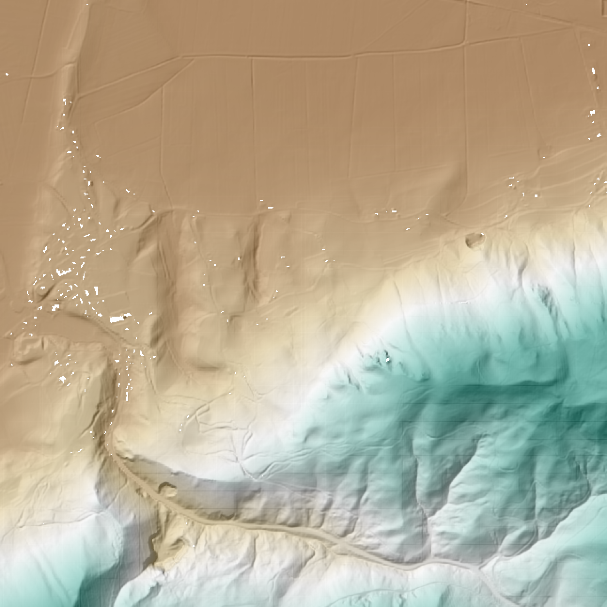

Batch Processing
PDAL doesn’t handle matching multiple file inputs except for glob handling for merge operations, but does allow for command line substitution parameters to make batch processing simpler, substitutions. Substitutions work with both Pipeline operations as well as with other applications such as translate.
Operating system variations
How substitutions are passed generally depends on the operating system and tools available.
In the unix/linux environments, this is primarily using the find and ls programs to get
lists of files (either with directories or just filenames) and the xargs or parallel program to pass
those files to the pdal application (although -exec with find can also be used). These
tools are available in the docker environment if you are running PDAL under docker. They
are also available under Windows one installs Cygwin or MinGW. They are also available if
Git for Windows is installed. They are also available as win32 command line programs installed
from the GNU Findutils (https://www.gnu.org/software/findutils/findutils.html). They are
available for MacOS and Linux.
Windows native tools
Subtitions can be handled directly in windows using PowerShell syntax.
While there are a number of ways to generate lists of files, the Get-ChildItem is used here, along with the foreach option to pass each separate filepath to the pdal application.
Example - Batch compression of LAS files to LAZ - PowerShell:
To compress a series of LAS files in one directory into compressed LAZ files in another directory, the PowerShell syntax would be:
Get-ChildItem .\DIR1\*.las | foreach {pdal translate -i .\DIR1\$($_.BaseName).las ^
-o .\DIR2\$($_.BaseName).laz}
Note the use of the $($_.BaseName) syntax for the files passed. This option on the $($_) shortcut for the full filename, removes the directory and the extension on the file and allows the user to set the path and extension manually.
Example - Parallel Batch compression of LAS files to LAZ - PowerShell:
This use of the PowerShell syntax doesn’t allow a user to execute more than one process at a time. There is a free download of the xargs program that provides parallel execution available at http://www.pirosa.co.uk/demo/wxargs/ppx2.exe. For this tool, the file names are passed with using the {} syntax.
Get-ChildItem .\dir1\ | Select-Object -ExpandProperty BaseName ^
| .\ppx2.exe -P 3 pdal translate -i ".\dir1\{}.las" -o ".\dir2\{}.laz"
Example - Batch compression of LAS files to LAZ - Bash:
To compress a series of LAS files in one directory into compressed LAZ files in another directory, the Bash syntax would be:
ls ./dir1/*.las | parallel -I{} \
pdal translate -i ./dir1/{/.}.las -o ./dir2/{/.}.laz
In Parallel, then {/.} syntax means strip the directory and the extension and just use the basename of the file. This allows you to easily change the output format and the location.
Example - Parallel Batch compression of LAS files to LAZ - Bash:
Parallel, as its name implies, allows parallel operations. Adding the -j syntax indicates the number simultaneous jobs to run
ls ./dir1/*.las | parallel -I{} -j 4 \
pdal translate -i ./dir1/{/.}.las -o ./dir2/{/.}.laz
Exercise - Pipeline Substitions:
For the most flexibility, pipelines are used to apply a series of operations to a file (or group of files). In this exercise, we build on the Generating a DTM pipeline example, but run this pipeline over 4 files and reproject, calculate a bare earth using the filters.smrf filter, remove those points that aren’t bare earth with filters.range and then write the output using the writers.gdal.
The pipeline we are using is:
{
"pipeline": [
{
"type":"readers.las"
},
{
"type": "filters.reprojection"
},
{
"type": "filters.smrf"
},
{
"type":"filters.range",
"limits":"Classification[2:2]"
},
{
"gdaldriver":"GTiff",
"output_type":"idw",
"resolution" :"2.0",
"type": "writers.gdal"
}
]
}
You might have spotted that this pipeline doesn’t have any input or output file references, or a value for the output spatial reference. We will be adding those at the command line, not within the actual pipeline and using the substitutions syntax to do this.
PS ./exercises/batch> Get-ChildItem ./exercises/batch/source/*.laz | ^ foreach {pdal pipeline ./exercises/batch/batch_srs_gdal.json ^ --readers.las.filename=./source/$($_.BaseName).laz ^ --writers.gdal.filename=./dtm/$($_.BaseName).tif ^ --filters.reprojection.in_srs=epsg:3794 ^ --filters.reprojection.in_srs=epsg:32733}ls ./exercises/batch_processing/source/*.laz | \ parallel -I{} pdal pipeline ./exercises/batch_processing/batch_srs_gdal.json \ --readers.las.filename={} \ --writers.gdal.filename=./exercises/batch_processing/dtm{/.}.tif \ --filters.reprojection.in_srs=epsg:3794 \ --filters.reprojection.out_srs=epsg:32733
Once you have your dtms created with pdal, combine them to a single file with:
gdalbuildvrt ./exercises/batch_processing/dtm.vrt ./exercises/batch_processing/dtm*.tif
You can then visualize the vrt with qgis. Add the vrt twice, and set the properties of the lower layer to hillshade. Set the upper layer to Singleband PseudoColor and choose a pleasing color ramp. Then set the transparency of the upper layer to 50% and you’ll get a nice display of the terrain.
{kind=link}